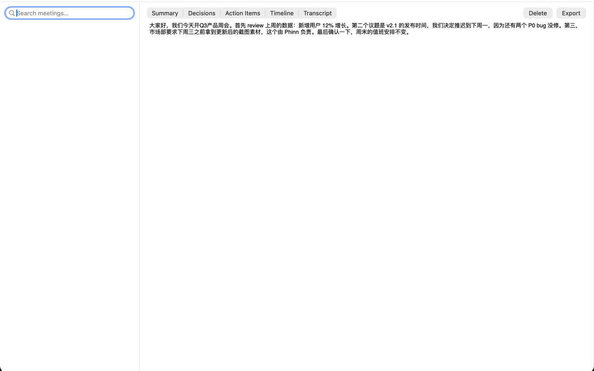
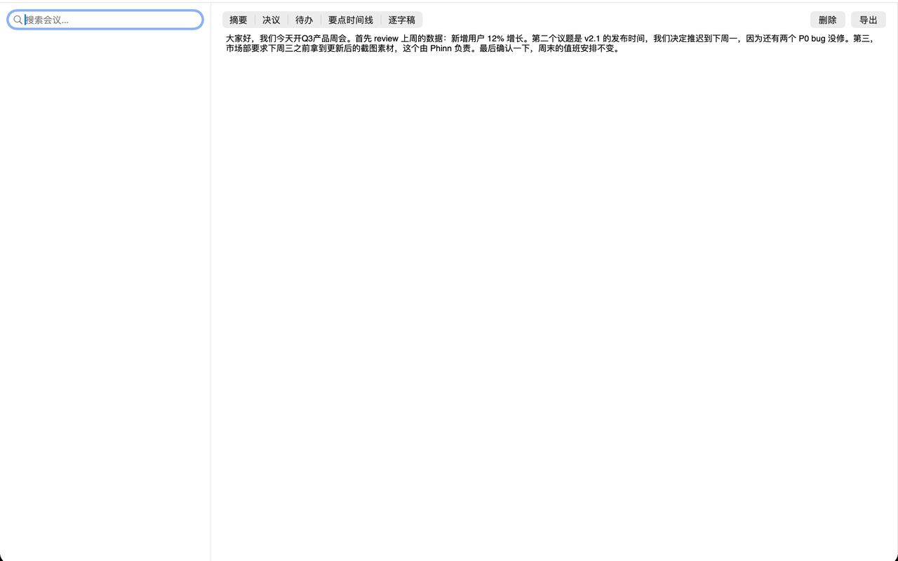

On-device Whisper transcription + local AI summarization. Works with the network off. Built for HR interviews, client negotiations, strategy meetings.
Summary, agreed decisions, action items with owners, and a timestamped timeline. Click any line to the exact moment.
Deep optimization for Mandarin + English code-switching. Works with Zoom, Tencent Meeting, Teams, Feishu, DingTalk.
Full-text search across all notes and transcripts. Export Markdown / TXT / SRT — Notion & Obsidian friendly.
KinetMinutes sits in your menu bar and detects meetings in Zoom, Teams, Tencent Meeting, Feishu, DingTalk, Discord or Webex — recording starts automatically.
Audio is transcribed on-device with Whisper. Nothing is uploaded, nothing is recorded in the cloud — it works with your network off.
When the meeting ends, local AI writes the minutes: summary, decisions, action items with owners, and a clickable timeline.
No. Transcription (Whisper) and AI summarization both run locally. KinetMinutes works with the network fully off. Your audio, transcripts and notes stay in your library — delete everything anytime.
Zoom, Tencent Meeting, Microsoft Teams, Feishu (Lark), DingTalk, Discord and Webex. Recording can also be started manually for any call.
Free: base transcription model, 5 AI notes per month, TXT/SRT export. Pro is a one-time purchase (no subscription): larger models, unlimited AI notes, Markdown/PDF export.
Yes — Chinese-first. Whisper models are tuned for Mandarin and mixed Chinese-English speech, a gap most global tools leave open.
Any Apple Silicon Mac running macOS 14 or later. The base model downloads once, then everything runs offline.

端侧 Whisper 转写 + 本地 AI 总结,断网可用。HR 面谈、客户谈判、战略会的放心之选。
摘要、决议、带负责人的待办、带时间戳的时间线。点击任意条目直达原声。
针对普通话 + 中英混说深度优化。支持 Zoom、腾讯会议、Teams、飞书、钉钉。
纪要+逐字稿全文搜索,导出 Markdown / TXT / SRT,兼容 Notion 与 Obsidian。
KinetMinutes 常驻菜单栏,自动检测 Zoom、腾讯会议、Teams、飞书、钉钉、Discord、Webex 会议并开始录音,无需任何手动操作。
语音由端侧 Whisper 转写,不上传、不进云端,断网也能正常工作。录音、逐字稿、纪要都留在本机,随时可整库删除。
会议结束时本地 AI 自动生成纪要:摘要、决议、带负责人的待办、可点击回跳原声的时间线。
不会。转写(Whisper)和 AI 总结全部在本机运行,断网状态可完整使用。录音、逐字稿、纪要都在你自己的会议库里,随时可整库删除。
Zoom、腾讯会议、Microsoft Teams、飞书、钉钉、Discord、Webex 自动检测;任意通话也可手动开录。
免费版:基础转写模型、每月 5 次 AI 纪要、TXT/SRT 导出。Pro 为一次性买断(无订阅):更大模型、AI 纪要不限次、Markdown/PDF 导出。
中文优先是本产品的核心能力:针对普通话与中英混说深度优化,这是大多数国际工具的短板。
Apple Silicon 芯片的 Mac,macOS 14 及以上。基础模型首次下载后,之后全部离线运行。
端側 Whisper 轉寫 + 本機 AI 摘要,斷網可用。HR 面談、客戶談判、戰略會議的放心之選。
摘要、決議、帶負責人的待辦、帶時間戳的時間線。點擊任意條目直達原聲。
針對普通話 + 中英混說深度優化。支援 Zoom、騰訊會議、Teams、飛書、釘釘。
紀要+逐字稿全文搜尋,匯出 Markdown / TXT / SRT,相容 Notion 與 Obsidian。
KinetMinutes 常駐選單列,自動偵測 Zoom、Teams、騰訊會議、飛書、釘釘等會議並開始錄音。
語音由端側 Whisper 轉寫,不上傳、不進雲端,斷網也能正常運作。
會議結束時本機 AI 自動產生紀要:摘要、決議、待辦與可點擊的時間線。
不會。轉寫與 AI 摘要全部在本機執行,斷網可完整使用,資料可隨時整庫刪除。
Zoom、騰訊會議、Microsoft Teams、飛書、釘釘、Discord、Webex 自動偵測;任意通話也可手動開錄。
免費版:基礎模型、每月 5 次 AI 紀要、TXT/SRT 匯出。Pro 為一次性買斷(無訂閱):更大模型、AI 紀要不限次、Markdown/PDF 匯出。
Apple Silicon 晶片的 Mac,macOS 14 以上。基礎模型首次下載後全部離線運作。
オンデバイス Whisper + ローカル AI。オフラインで完全動作。面談・商談に。
要約・決定事項・担当者付きアクション・タイムスタンプ付きタイムライン。
Zoom、Tencent Meeting、Teams、Lark、DingTalk。
議事録と文字起こしを全文検索。Markdown / TXT / SRT 書き出し。
メニューバーに常駐し、Zoom / Teams / Tencent Meeting などの会議を自動検知して録音開始。
音声はオフラインで文字起こし。アップロードなし、クラウドなし。
会議終了時にローカル AI が要約・決定事項・アクション・タイムラインを自動生成。
いいえ。文字起こしも AI 要約もすべてローカルで実行されます。オフラインでも完全動作し、データはいつでも一括削除できます。
Zoom、Tencent Meeting、Microsoft Teams、Lark、DingTalk、Discord、Webex を自動検知。手動での録音開始も可能です。
無料版:基本モデル、月 5 回の AI 議事録、TXT/SRT 書き出し。Pro は買い切り(サブスクなし):大モデル、AI 議事録無制限、Markdown/PDF 書き出し。